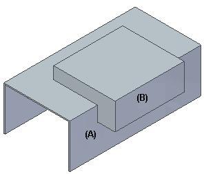
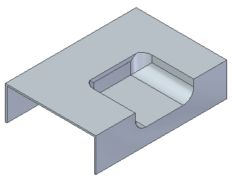
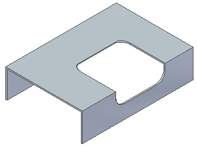
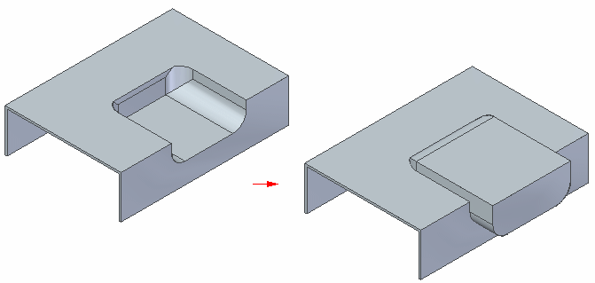

Emboss command bar
- Output Options
-
Displays the Emboss Options dialog box.
- Select Target
-
Selects the target body (A) to be embossed.

- Select Tool
-
Selects the body or bodies (B) to be used to create the emboss.
- Thicken
-
Applies thickness to the tool body prior to embossing the target.

If this option is not selected, the clearance body is subtracted from the target.

- Direction
-
Specifies the direction of the tool used to create the emboss.

Note:If there are multiple embossing tools, the flip direction is the same for all tools. If you want a different tool direction for different tools, you must run the command multiple times and select the tools individually.
- Accept
-
Accepts the current input.
- Cancel
-
Cancels the current input.
How do I
Emboss a bodyEdit the thickness value of an emboss feature in the synchronous environment
Dynamically edit an emboss feature in the synchronous environment
Edit an emboss feature in the ordered environment
Dynamically edit the clearance or thickness value in the ordered environment
Learn more
Emboss featuresLook up more details
Emboss commandEmboss Options dialog box